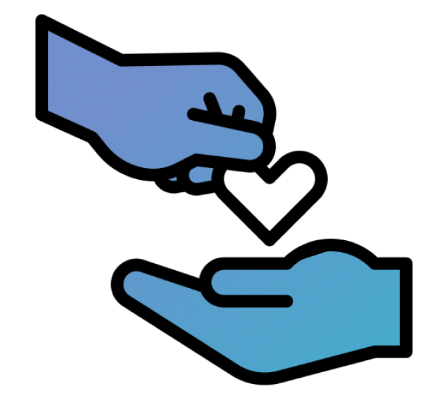
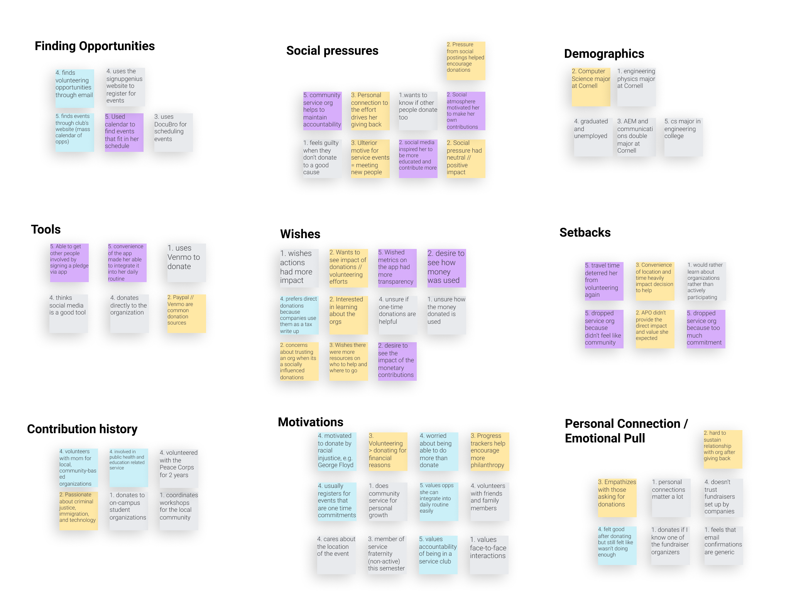
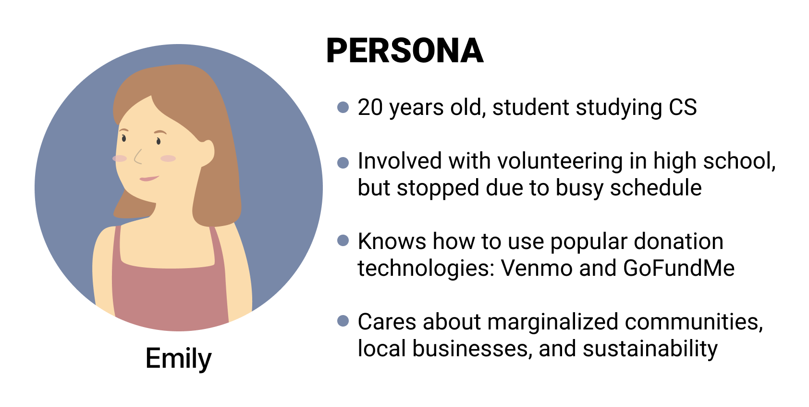
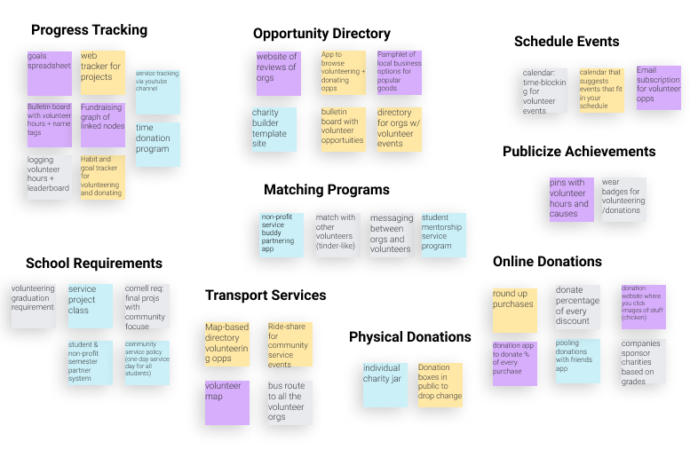
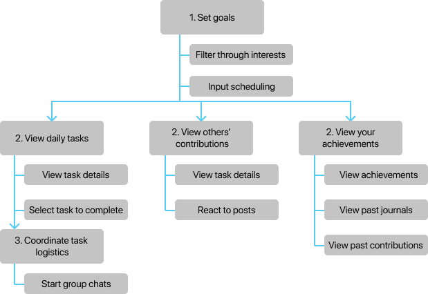
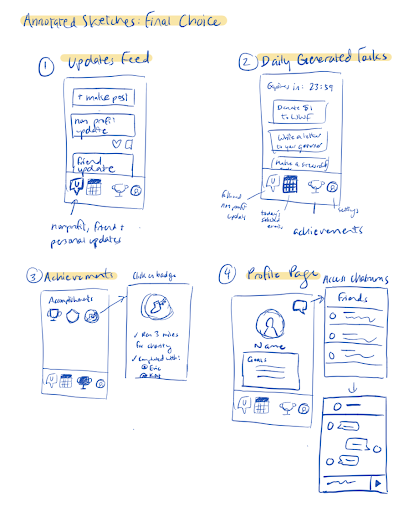
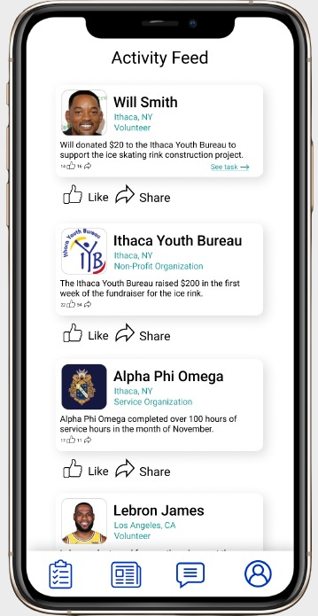
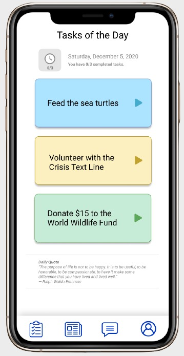
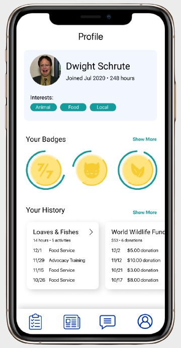
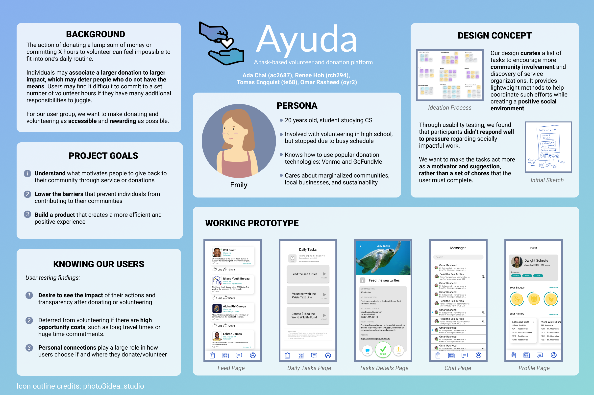

Tomas Engquist
Product Manager @ Capital One


I'm a product manager at Capital One heading up a team of iOS and Android developers. I studied User Experience at Cornell Unversity and am passionate about human centered design. I am currently based in Arlington, Virginia.
Ayuda

Summary
Ayuda is a mobile application made by me and three other students at Cornell University. The app is designed to motivate and help users volunteer and make chartiable contributions in their local community and beyond.
The design process began with brainstorming, defining the problem, and conducting contextual interviews.
Then we created wireframes, ran usability tests, protoyped the app, and conducted more usability tests.
Last, we finalized the design and created a poster.
Stage 1: Topic Brainstorming
I brainstormed five different problems experienced by specific user groups that I have witnessed. See full brainstorm here.
- Students having difficulty enrolling in classes
- People in NYC who have to commute to school or work in traffic
- People who get distracted while working on their computer
- Middle school students unsure about the high school application process
- People who fall victim to fake news stories
However, we decided to go with another group member's idea: people having trouble making charitable contributions.
Stage 2: Defining the Problem Space
| Problem Space: |
Making donations on a low budget and finding local volunteering opportunities is difficult. |
| Target Audience: |
Individuals who wish to contribute to their community through donations or volunteering. |
| Stakeholders: |
Organizations that donations are given too and people that recieve the benefit of charity. |
Stage 3: Contextual Interviews and the Persona
We prepared an interview script, created an informed consent form, and conducted four contextual interviews with members of the target audience.
We asked them questions such as:
- Describe a recent experience where you volunteered in your community
- What motivates you to make donations?
- What problems have you encountered when volunteering or donating?
- Is there anything you want to change about making donations?
We took the data from the contextual interviews and created an affinity diagram to derive insights.

Some key insights we learned from our diagram were:
- A motivation to make contributions is the social pressure, inspiration, and accountability from the people around you.
- Participants care a lot about the convenience and accessibility of donating money or signing up for an event.
- Personal ties to an organization or cause is ana important factor in motivating the participant to do charity work.
- Participants want to see the impact of their contributions after having done so.
We utilized the data from the contextual interviews to create a persona for our design: Emily.

Stage 4: Ideation
We each came up with 10 different designs for the persona that we could use to help formulate the final design idea. See my full list
here or just check some examples below.
- Email subscription services for volunteering opportunities
- A bulletin board where users post their volunteer hours
- A website where users donate items instead money
We compared our ideas and made another affinity diagram to help synthesize them into a desgin.

Then, we formulated some of the requirements for our design and sythesized our favorite ideas from the brainstorm.
Finally, we made the initial plan for our design as a graph. See the ideation Figma
here.

Stage 5: Wireframing and Prototyping
We each created wireframes and combined that best elements from each wireframe to make a final annotated sketch.

We did a round of usability testing with the wireframes before moving on to prototyping. Here are some of the insights from my usability test.
- The user had different perceptions of many of the icons used.
- The user found the navigation bar confusing and unusable.
- The messsaging system was not intuitive enough.
After reviewing all the insights from usability testing, we created the first draft of the prototype and did a another round of testing.
Check out the complete list of UX problem instances and UX design problems that we found here.
After working out solutions to usability issues, we edited the prototype to create the
final version.



Stage 6: Poster Presentation
We created a poster explaining the project and its users.
